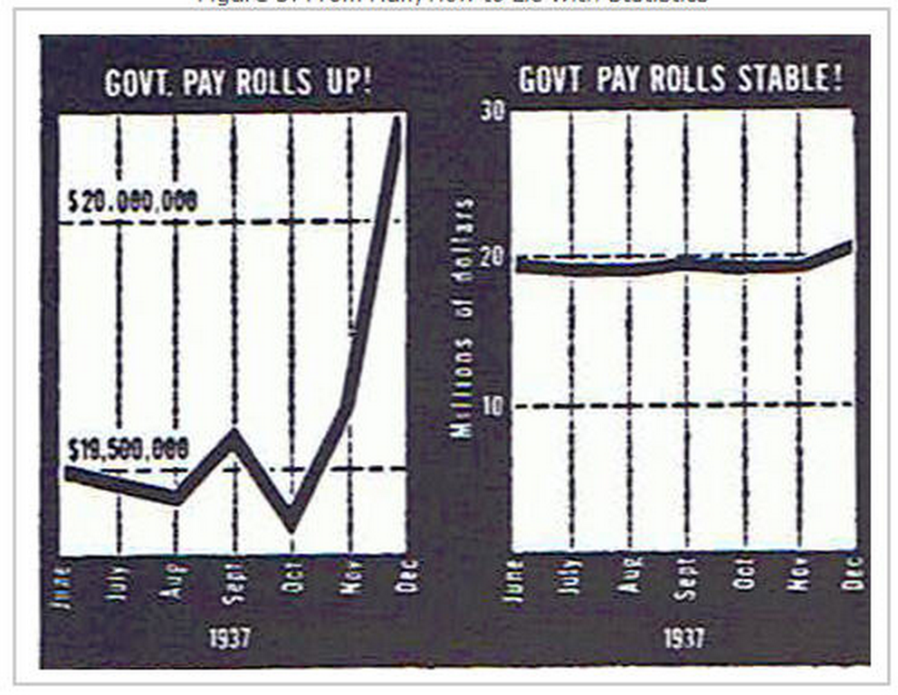
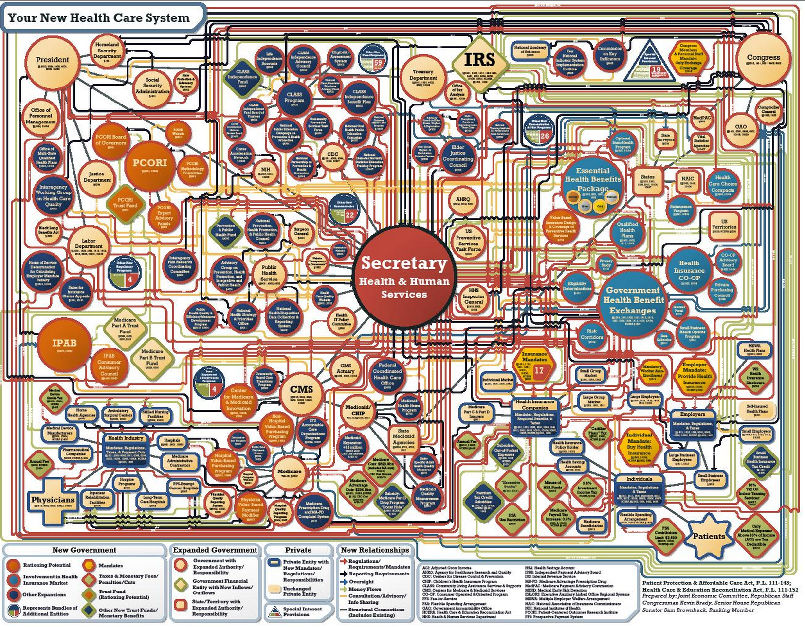

Ethics and Evaluation
Outline
- Ethics
- Guiding principles
- Parties of interest
- Scope of responsibility
- Prioritization
- Evaluation
- Assessment framework
- Usability testing
- Example
Ethics
A pragmatic definition:
An obligation to uphold a set of principles
Guiding principles
Which principles are we obligated to uphold?
- Accuracy
- Interpretability
- Transparency
- Data
- Methods
Accuracy
Interpretability
“They’re using this chart like a drunken man uses lampposts – for support rather than for illumination.” -Charles Blow
Parties of interest
Who are we obligated to?
- Users
- Health officials
- Health providers
- International NGOs
- General public
- Researchers
- Educators
- You
- Those affected
- Funding recipients
- Patients
- Interventions
Scope of responsibility
What is a visualization(visualizer?) responsible for communicating?
- Which pieces in the process?
- To what level of detail?
Visualization process

What information do people need to understand to make decisions?
- Sample size
- Data manipulation
- Outlier removal
- Number of tests performed
Prioritization
Incentives to breach ethical guidelines
- Publication bias
- Funding pressure
- Employer pressure
- Researchers seeking a story
- Desire to present a simple message
- Tension between promoting research and acknowledging data or methodological gaps
Global Burden of Disease study
“ To provide policymakers, researchers, donors, and other decision-makers with the most timely and up-to-date picture of population health to inform critical decisions...”
What do these actors need to understand in order to take action?
Summary
- Visualizations dictate how people understand data
- Guiding principles
- Responsibility to various parties
- Challenge of communicating process and data
Evaluation
Assessment framework
Goal of user centered design
“Design the right product for the right people”
- Identify target population for product (users)
- Construct aggregate representations of common users (personas)
- Describe contexts in which product is used (scenarios)
- Detail specific tasks to accomplish (use cases)
Design process (personas and scenarios)
- Do your personas represent your user base?
- Have you identified the most important issues to your personas?
- Are your scenarios realistic?
Implementation (use cases)
- Can your visualization answer the questions of your personas?
- How easily can people answer the questions of your personas?
Evaluating use cases
Self assessment
- Can the visualization present the data of interest?
- Options available to display values
- Number of steps does it take to answer questions of interest
- Graphical perception
- Nominal/ordinal: differences between categories distinguishable?
- Quantitative: most effective encodings are used

Surveys
- Derive specific questions from scenarios of personas
- Assess time, self rated difficulty
- Have users estimate magnitudes based on visuals
- Who should you survey?
Example
Financing Global Health
- Dollars spent/received on global health
- Source of the money (i.e., Japan)
- Channel through which it is spent (i.e., World Bank)
- Recipient country or region (i.e., East Asia)
- Health focus area (i.e., HIV/AIDS)
- Dollar amounts from 1990 to 2013
Persona
Scenario
Questions the visualization should answer
Link
Summary
- Evaluation depends on detailed use cases
- Use cases are only valuable if you have the right persona
- Evaluation should be performed throughout